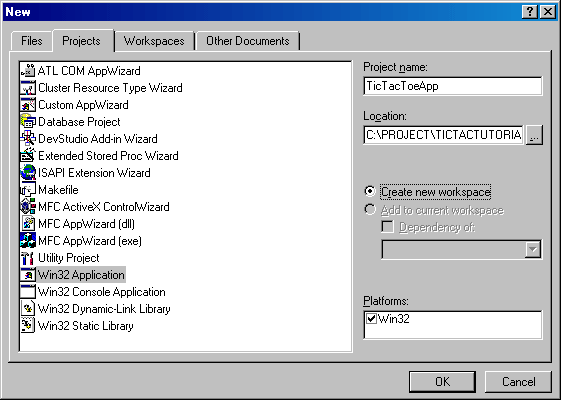
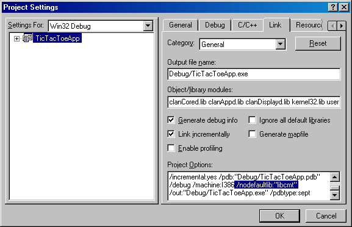
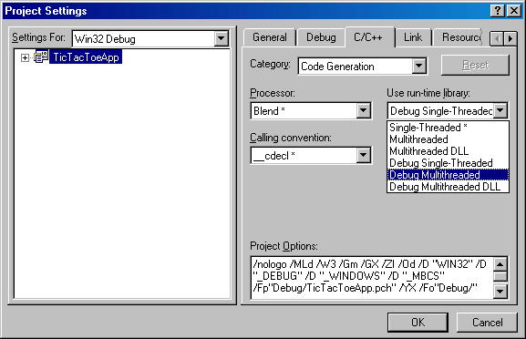

Simple Game Development with ClanLib 0.8
Part 1
Introduction to ClanLib & Visual C++ Workspace Setup
This tutorial assumes you have a working knowledge of C++ or a good reference from which to learn. We will be designing classes, using pointers, and doing other moderately-advanced things.
That out of the way, let's start with this question: What is ClanLib? It is a programming library that handles mundane things like drawing graphics, playing sounds, and accepting user input from the mouse and keyboard. It also does much more, but even these simple things can be very difficult if you're creating them from scratch. ClanLib has the added bonus of being a cross-platform library, which means that you can use the same source code you use to build a Windows game to also build that game under Linux (or vice versa.)
The first step in creating a game with ClanLib (CL) is downloading, installing, and (optionally) compiling the library. We will be using the static libraries that you can download or compile yourself. There are other ways of using the library, such as compiling dynamic DLLs, but we'll ignore those. If you have trouble with this first step there is good documentation to help you out, so I'll be moving along to the next step: setting up the Visual C++ workspace.
First, create a new, empty workspace with the name of your game. The sample game we'll be developing here is Tic-Tac-Toe (more on that a bit later).
Fig 1.

Next, go into Project > Settings > Link and add the CL libraries you'll be using to the Object/library modules field. For the Debug project configuration, I've added the basic debug libraries we'll need: clanCored.lib clanAppd.lib clanDisplayd.lib For the Release configuration, we'll use the same libraries without the 'd' appended to the name. (Note: this is apparently now optional - if you include the CL headers, these libraries are automatically linked.) Also for the Debug configuration, I've added the entry /nodefaultlib:"libcmt" to the options field. This tells the compiler to ignore the that particular library because it would duplicate symbols (variables, functions) defined in another library.
Fig 2.

Last in setting up, go into Project > Settings > C++ and change the category to 'code generation'. Under 'run-time library', select Debug Multithreaded. (For your release configuration, choose plain Multithreaded.)
Fig 3.

At this point I like to test the new application's setup to make sure everything compiles and all the header files are located. You may have to add the CL library and include directories to VC++'s configuration under Tools > Options > Directories.
To test the setup, just grab the file 'minimum.cpp' from the Minimum example program included with the CL release. Add it to your source files folder and try compiling. If it compiles and runs correctly, you can go ahead and delete it to have a clean slate for your game.
CL_ClanApplication
Every CL application must derive this class and create an instance of the derived class. This instances forms the base of your program, and you add whatever code you need to the main() function. Here is a simple derived class that will form the basis of our program.
A quick note about style - I got my programming start with Java, so my C++ style reflects this. It differs somewhat from the CL API but I don't either style has a particular advantage. Just don't get me started on Hungarian notation..
// Interface (for the .h file)
// Include necessary CL header files
#include <ClanLib/core.h>
#include <ClanLib/display.h>
#include <ClanLib/gl.h>
#include <ClanLib/application.h>
class TicTacToeApp : public CL_ClanApplication {
public:
TicTacToeApp();
~TicTacToeApp();
virtual int main(int, char **);
};
|
// Implementation (for the .cpp file)
#include "TicTacToeApp.h"
// This application instance is required or the app will not run
TicTacToeApp applicationInstance;
// Constructor
TicTacToeApp::TicTacToeApp() {}
// Destructor
TicTacToeApp::~TicTacToeApp() {}
int TicTacToeApp::main(int, char **) {
// Create a console window for text-output if not available
CL_ConsoleWindow console("TicTacToeApp Console");
console.redirect_stdio();
try {
// CL initialization functions
// These must be called or CL functions will not work
// Also, SetupCore must be init()'ed first and denit()'ed last
CL_SetupCore::init();
CL_SetupDisplay::init();
CL_SetupGL::init();
// Set display mode
CL_DisplayWindow window("TicTacToeApp", 500, 450);
// CL deinitialization functions
CL_SetupGL::deinit();
CL_SetupDisplay::deinit();
CL_SetupCore::deinit();
} catch (CL_Error err) {
std::cout << "Exception caught: " << err.message.c_str() << std::endl;
// Display console close message and wait for a key
console.display_close_message();
}
return 0;
}
|
Of course, this program does nothing but open and close, but if it does that then we're off to a good start. Now for a momentary time-out that every programmer should take before diving into the creation of their next masterpiece.
Tic-Tac-Toe
Games don't come any simpler than this. I plan on creating 2 classes for this application - the TicTacToeApp we've already started, and a TicTacToeGame for actually playing with X's and O's. Note that in this tutorial I will be focusing on using CL to create this game and not the game itself, so I will skip over large portions of game implementation. That's experience you will have to pick up somewhere else.
We're ready to start adding graphics and control code to our game, so that's it for this part of the tutorial.
Download Visual C++ Workspace for Part 1
Move on to Part 2
|